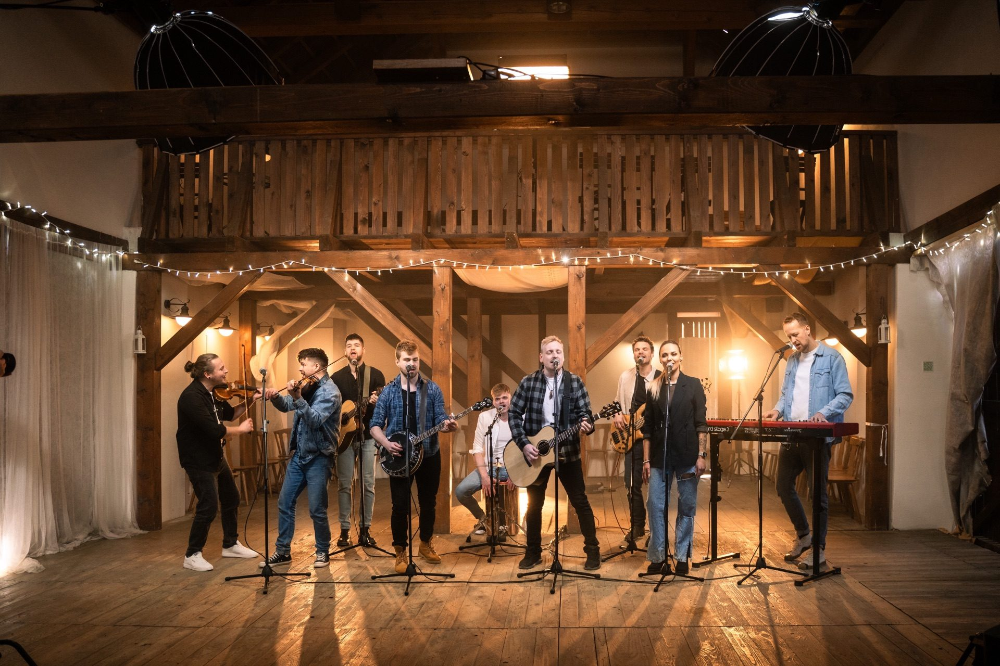
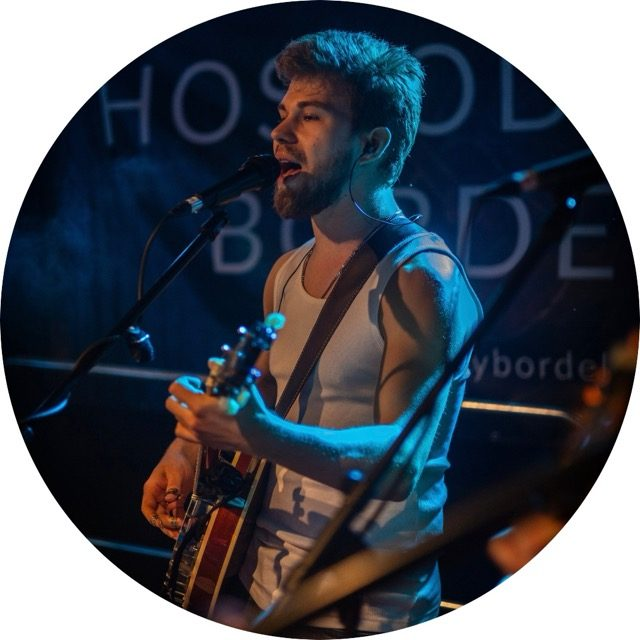
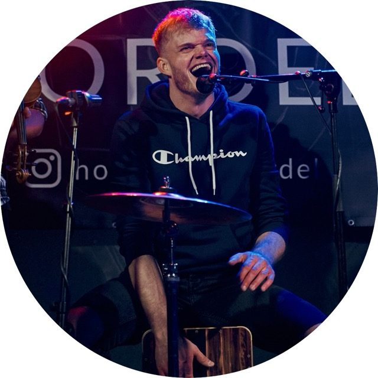
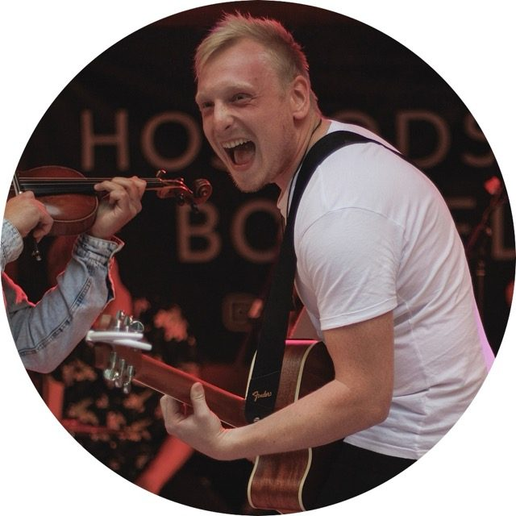
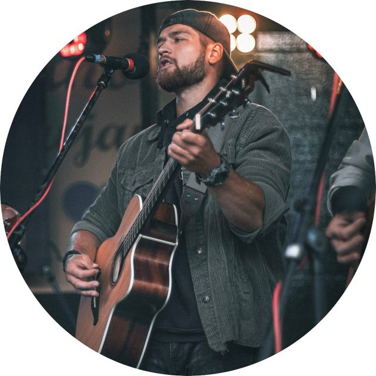
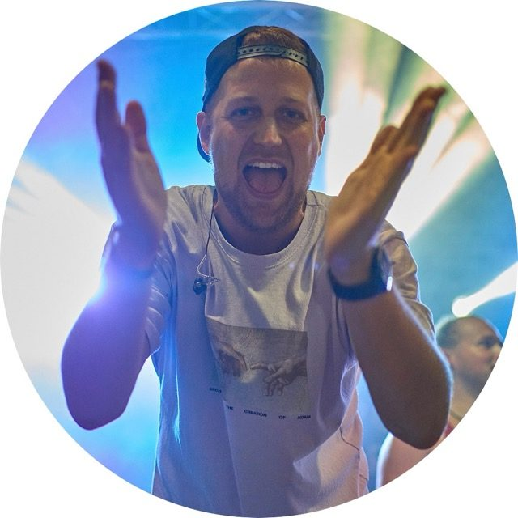
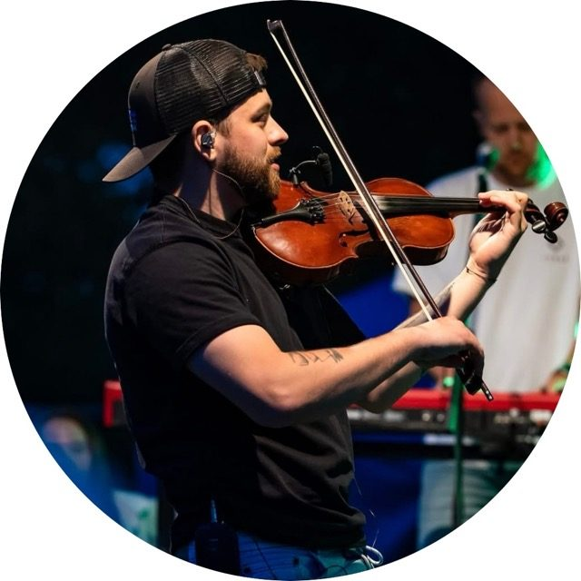
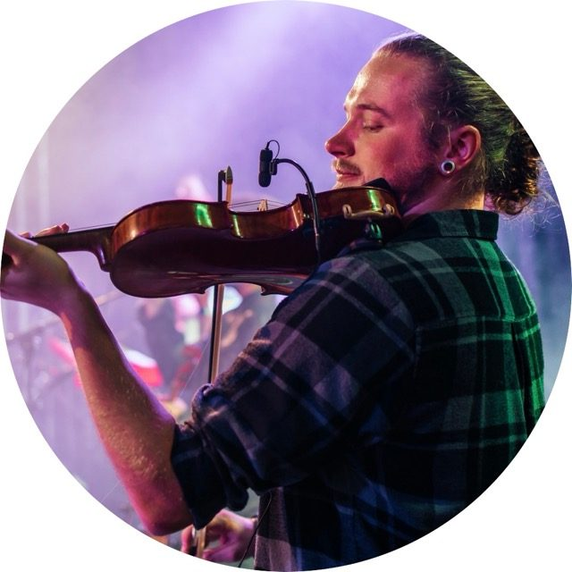
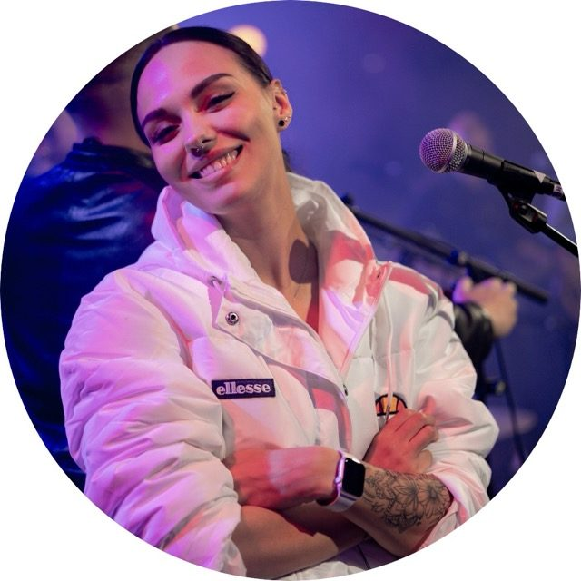
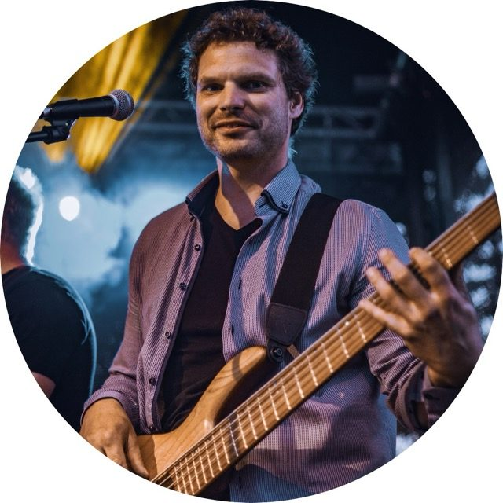

Jejich netradiční název vznikl při prvních koncertech v hospodách, kde se naplno projevil jejich divoký temperament a osobité pojetí zábavy. Kapela již několik let uzavírá slavnosti a městské oslavy v Moravskoslezském kraji a Jihomoravském kraji.
Devítičlenná kapela hraje písně známých českých interpretů a postupně přidává vlastní tvorbu. Těšit se můžete na písně od Jelena, Čechomoru, Divokého Billa nebo kapely Kabát.
Kapela Hospodský Bordel vznikla v roce 2021 a její členové navázali na úspěšné období vystupování v hospodách. Prvním velkým koncertem kapely byly Slavnosti Města Nový Jičín v roce 2022, kde se na zámeckém náměstí sešel v té době překvapivý počet fanoušků do té doby neznámé skupiny muzikantů.
Nový Jičín kapele dal velký prostor — kapela se objevila jako poslední vystupující na Vánočních trzích a zakončila Městské Slavnosti v roce 2023. Tyto koncerty ukázaly velkou oblíbenost u lokálního publika. V roce 2024 kapela vystoupila na Zlínském Majálesu, Brněnské oslavě jara, hudebním festivalu a v létě zahrála přibližně na patnácti dnech obce a obecních slavnostech v okolí Nového Jičína.
Připomíná začátky kapely a vystupování v hospodách, kde vše začalo.
Název je hovorový výraz ukazující na divokou náturu členů kapely a pozitivní energii, kterou na koncertech návštěvníci často vyzdvihují.

Petr Knobloch
Bicí
Banjo
Kytara

Marek Strnadl
Cajon
Kytara

Vojta Kyselý
Kytara

Tomáš Pauló
Kytara
Banjo

David Rajnoch
Piano

Jan Demel
Housle
Mandolína

Bivoj Kudělka
Housle

Adéla Lysková
Zpěv

Marek Vaculík
Baskytara